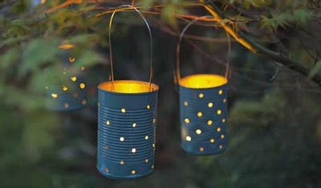
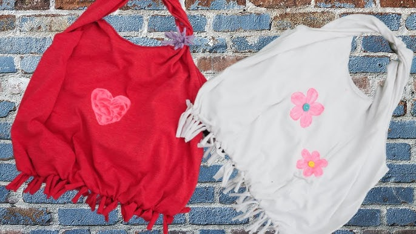
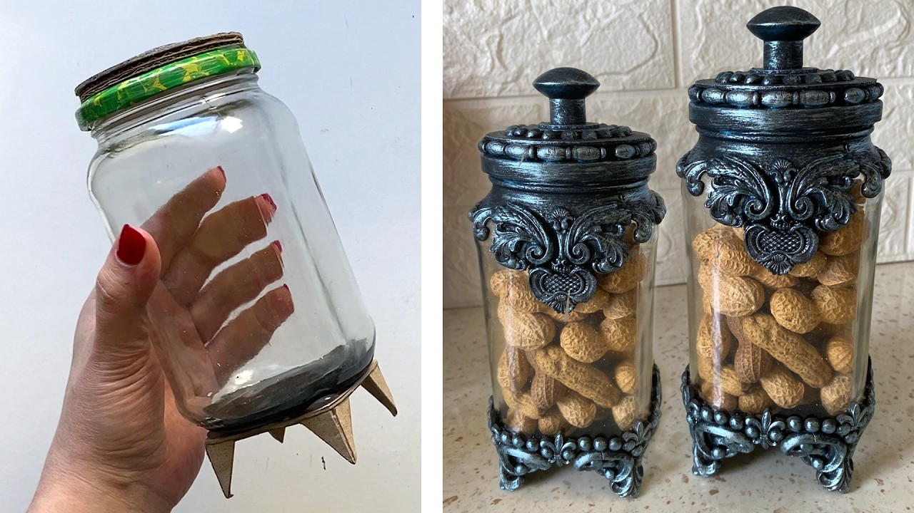

DIY Upcycling Projects
Video Tutorial: Upcycling Ideas
Learn creative ways to repurpose everyday items in this informative video.
--------------------------------------------------------------------------------------------------------------------------------------------------------------------------------------------------------------------------------------------------------------------------------------------------------------------------------------------------------------------------------------------------------------------------------------------------------------------------------------------------------------------------------------------
1. Tin Can Lanterns
Instead of throwing away tin cans, turn them into beautiful lanterns that add charm to your home or garden.
Materials Needed: Empty tin cans, hammer and nail or drill, wire (optional), tea lights or LED candles.
Steps: Clean the can thoroughly, fill it with water and freeze to keep the shape while punching holes. Use a nail or drill to create decorative patterns. Once done, let it thaw, dry it, and place a light source inside.
Recycling Benefit: Diverts metal waste from landfill and encourages reuse of durable containers.
--------------------------------------------------------------------------------------------------------------------------------------------------------------------------------------------------------------------------------------------------------------------------------------------------------------------------------------------------------------------------------------------------------------------------------------------------------------------------------------------------------------------------------------------
2. T-Shirt Tote Bags
Give your old t-shirts a second life by turning them into reusable shopping bags—no sewing required!
Materials Needed: Old t-shirt, scissors.
Steps: Cut off the sleeves and neckline to make handles. Cut fringes at the bottom and tie them to close the base of the bag. Optional: double knot for durability.
Recycling Benefit: Reduces textile waste and cuts down on the use of single-use plastic bags.
--------------------------------------------------------------------------------------------------------------------------------------------------------------------------------------------------------------------------------------------------------------------------------------------------------------------------------------------------------------------------------------------------------------------------------------------------------------------------------------------------------------------------------------------
3. Glass Jar Organizers
Transform used glass jars into sleek storage for office supplies, kitchen goods, or craft materials.
Materials Needed: Clean glass jars with lids, optional labels or paint, adhesive (if mounting).
Steps: Clean and remove labels from jars. Decorate with paint or labels. Use them on shelves or attach to a wooden board to create a wall organizer.
Recycling Benefit: Keeps glass containers out of the recycling stream and supports zero-waste organization at home.
--------------------------------------------------------------------------------------------------------------------------------------------------------------------------------------------------------------------------------------------------------------------------------------------------------------------------------------------------------------------------------------------------------------------------------------------------------------------------------------------------------------------------------------------